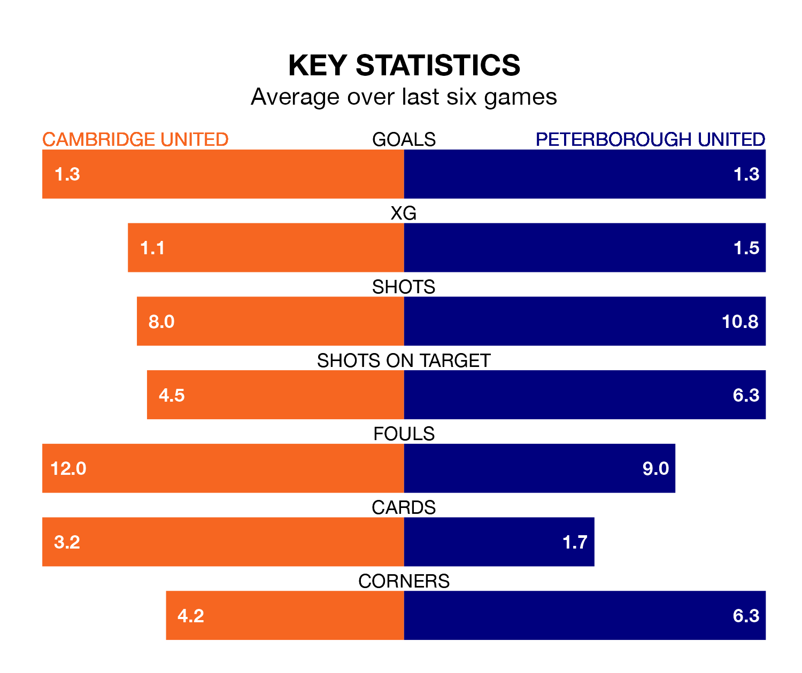

Peterborough United are strong favourites to take all three points despite Cambridge United's home advantage in Saturday lunchtime's match at the Abbey Stadium.
*Betting Company* are offering odds of 1.96 on Peterborough sealing the win, with the visitors sitting sixth in EFL League One table.
Cambridge, who are 17th in the league and 18 points behind the Posh, are priced at 3.15 to win. A draw is set at 3.4.
With 60 goals in 32 games so far this season, Peterborough are the league's highest scorers with 1.9 goals per game. And they are conceding at an average rate, letting in 41 goals at a rate of 1.3 per game.
Cambridge, meanwhile, are below average scorers, with 1.0 goal per game, compared to a league average of 1.3. They have conceded 1.2 goals per game.
In the last 10 years, Cambridge and Peterborough have played each other on seven occasions. Cambridge won one of them, Peterborough five, and they drew once.
On average, Cambridge scored 0.6 goals and the Posh 1.9 in those matches.
Their last meeting was on November 11, when Peterborough won 5-0 at home.
Cambridge United are in mixed form in EFL League One, with two wins and a draw from their last six games.
With a win and a draw over that period, Peterborough United's form is worse – they have taken four points from 18, compared to the hosts' seven.
The Posh's Harrison Burrows is among the league's most creative players, racking up 10 assists in 32 appearances so far this season, and holding second spot in EFL League One's assist charts.
For Cambridge, Sullay Kaikai has set up the most goals, having laid on three assists in 26 games.
Cambridge's last match was on Tuesday, a 2-1 loss against Bolton Wanderers, with Eoin Toal getting the goal for Cambridge.
Peterborough lost 2-1 against Blackpool last time out, on Saturday, with Hector Kyprianou on the scoresheet.
Updated: 10:08 (UTC), 23/02/24